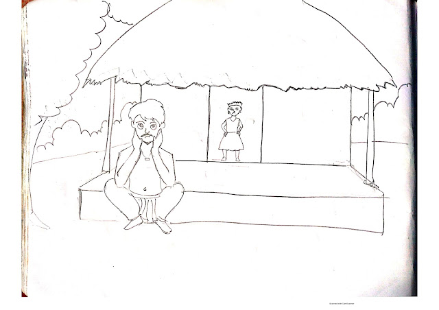

The story of Petney and hair theft
September 24,2020
There was a village called Ratanpur where everyone was having a very good day. Ramen is a resident of that village. Ramen was sleeping then suddenly in the morning his wife shouted and called him to come to the next room. Ramen got up and came to the next room and saw that his daughter's hair had been cut short. Her daughter was very sad because her hair was gone. To alleviate her grief, her neighbors came to visit her every day to comfort her
At that time, a few days later, it was heard that someone had cut the hair of another woman in a nearby house. Ramen became very curious and went to meet him. Then the woman said that she did not know anything. Went to bed at night with good hair, woke up in the morning and saw he had no hair on his head, Saying this, she started crying. Such incidents increased one after another. Almost every day at home, the news kept coming that someone's hair had been cut off. The villagers became very worried about this issue. One day Bhola told his daughter that today I will sleep on the verandah and you will sleep at home. Bhola fell asleep outside like that. Late at night Bhola woke up and got thirsty for water. But since he could not find anyone nearby, he decided to go and fetch water on his own. This is what he said when he entered the room. Then he saw that Petney was cutting his daughter's hair with a knife in his hand. Seeing this, he started shouting. All the people of the village gathered when they heard Bhola's shout. Everyone saw a Petni Bhola girl standing with her hair cut.
Seeing everyone, he laughed a lot and said that I have cut my hair and you can't do anything to me. With that he disappeared in a moment. After this incident there was a commotion in the village. The villagers did not understand what to do or not to do. On the other hand, this incident continued every day in the village. Many of the villagers were scared and started leaving the village. The few people who stayed in the village decided that they would find a way out. Then one of them said that he needed to go to the village chief. Because he has traveled a lot and has a lot of experience. Everyone agreed and went to see the village chief the next day. They went to the head of the village and told him everything. Then the head of the village said that this incident also happened in my house but I do not know the way.
Then Rahim said that Petni is cutting everyone's hair but if someone cuts Petni's hair then Petni will no longer have strength or will lose a lot. Everyone laughed when they heard this but Rahim said that his grandmother told him this when he was young. Since no one else had any choice, they agreed to Rahim's words. But now the question is who will cut the witch's hair. Everyone decided to cut Petni's hair. But the chief was too scared he did not agree. Then everyone started looking at each other but everyone was so scared that no one agreed to go. Then Rahim said ok I will cut Petni's hair. But you all have to follow my word. He said Petney had never attacked a man who was awake to this day, he had cut the hair of a sleeping man all the time. So tonight everyone will wake up and only I will sleep. According to this, Rahim lay down outside the house with fake hair and everyone in the village stayed awake.
After a while Petney saw that everyone in the village was awake today and no one had slept. At that time he saw a girl sleeping alone outside. Then she took the opportunity to go to him and when she was about to cut her hair, she untied it and went to his hand. Petney was very surprised and she kept looking at her hair once and stealing once. During this time Rahim got up quickly and cut Petney's hair. Then Petney said give me my hair or I'll kill you. Then Rahim said I have cut your hair, now you have no power. Petni begged Rahim to return the cut hair. Then Rahim said ok I can give hair but I have to tell you what you do with so much hair. Then he said I am depositing this hair in a well and when that well is full I will become stronger. Rahim said ok I can pay with your hair but I have to go to that well.
Petney took him to the well. The villagers also took the torch with Rahim. Going there, Rahim saw that there was a lot of hair in the well and it was almost half full. This time Rahim cleverly threw Petney's hair into the well. Then Petney said that I have shown you everything, then why did you throw my hair? Now how do I find my hair in everyone's hair? Rahim said your hair is in the middle, you go and pick it up. When Petney heard this, he went into the well and began to search for his hair. The villagers threw their torches into the well. Within moments the well caught fire and Petney was reduced to ashes in the fire. Everyone started praising Rahim for this work. From then on, everyone in the village started living in peace again.
Advice: Many big tasks can be solved easily by working together.
After a swim by Idries Shah
September 24,2020

We are all limited by our habits. In this story, a cat and horse make a deal to cross a river together to enjoy juicy corn in a field on the other side. But the cat's idiotic habits cause trouble and the horse must not only get them to safety but teach the cat a lesson.... READ MORE
The story of the crow and the pitcher
September 24,2020

It was very hot that summer. One such afternoon a crow was flying from afar. As a result of flying for a long time, he got very thirsty for water. He looked to see if there was water anywhere around. But he did not find water anywhere. Suddenly a pitcher fell in his eyes. He immediately went downstairs hoping to get some water and sat down on the pitcher. But the water fell just below the pitcher. Seeing this, the crow became sad. But since he could not find water anywhere else in the vicinity, he began to think about how to get water out of that pitcher..... READ MORE
The story of the tortoise and the rabbit
September 24,2020

A long time ago there was a small village called Haripur and there was a big lake next to that village. A tortoise lived under the calm water of the lake, and a rabbit lived with its young on the bank of the lake..... READ MORE